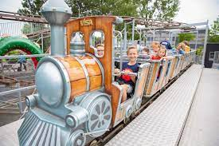

DippieDoe is een Nederlands pretpark gelegen bij recreatiegebied Aquabest in Best. Het park opende voor het eerst zijn deuren voor publiek in 1999. De attracties in het park staan zowel binnen als buiten. Het park richt zich vooral kinderen.
 BestZoo, voorheen: Dierenpark 'De Vleut', is een kleine dierentuin waaraan ook een speeltuin verbonden is. Het is gelegen in de buurtschap De Vleut bij Best in Noord-Brabant. Gezien de kleinschaligheid vooral geschikt met kleine kinderen.
BestZoo, voorheen: Dierenpark 'De Vleut', is een kleine dierentuin waaraan ook een speeltuin verbonden is. Het is gelegen in de buurtschap De Vleut bij Best in Noord-Brabant. Gezien de kleinschaligheid vooral geschikt met kleine kinderen.